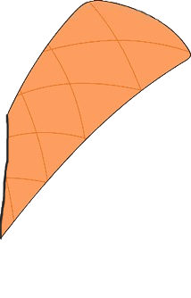
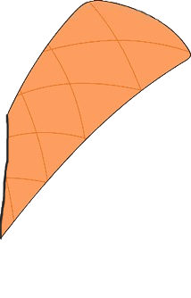

ORNITORRINCOS
ORNITORRINCOS

ORNITORRINCOS
ORNITORRINCOS
"O ornitorrinco é um animal incrível, com características únicas e
que despertam a curiosidade de muitos.
Sua aparência e comportamento são
fascinantes, tornando-o um dos animais mais interessantes do mundo." - Diz o biólogo.
Para informações além das que estão contidas no site, clique na imagem abaixo para ser redirecionado(a) para o site da National Geographic Brasil.


Biofluorescência ocorre quando um organismo absorve luz de uma faixa do espectro (como UV) e reemite essa luz em uma cor
visível, geralmente de tom diferente.
No caso dos ornitorrincos, quando expostos à luz UV, suas peles refletem tons de verde-azulado e ciano.
Pesquisadores estudavam fósseis e peles de diferentes espécies sob luz UV para observar características incomuns. Ao examinarem ornitorrincos preservados
em coleções
de museus, notaram que sua pelagem apresentava biofluorescência. Posteriormente, o fenômeno foi confirmado em ornitorrincos vivos.
A função exata da biofluorescência em ornitorrincos ainda não está totalmente compreendida, mas há algumas hipóteses:
Poucos mamíferos exibem biofluorescência, e a descoberta coloca os ornitorrincos ao lado de criaturas como alguns gambás, esquilos voadores e opossuns,
que também possuem essa habilidade.
Essa característica aumenta a lista de peculiaridades já notáveis dos ornitorrincos, que incluem botar ovos, ter bicos
parecidos com os de pato e serem venenosos.
| Informações sobre ornitorrincos | ||||
|---|---|---|---|---|
| Cor | Países | Expectativa de vida | Nome Científico | Tamanho |
| Marrom escuro e marrom claro. | Austrália e Tasmânia. | 10 a 17 anos de vida. | Ornithorhynchus anatinus. | 40 a 60 cm. |